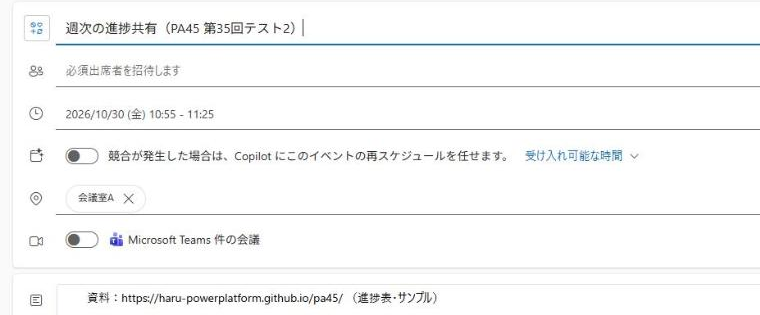
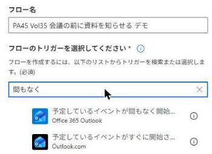
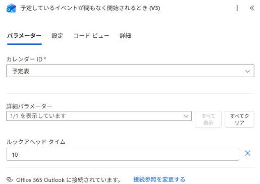
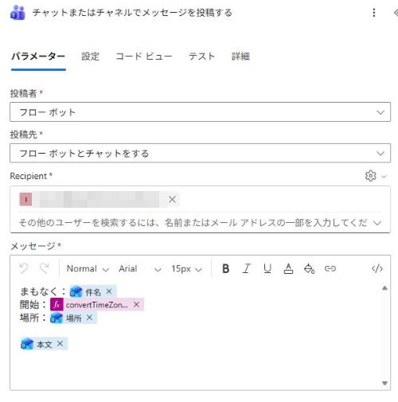
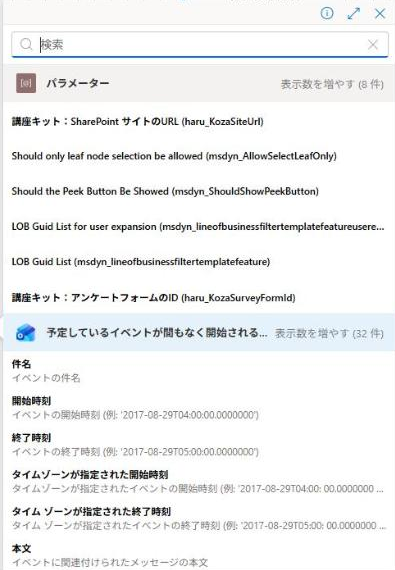
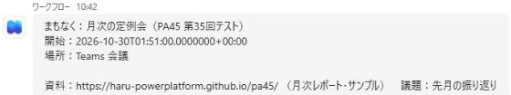
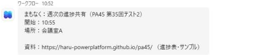

「資料どこ？」と探さなくていい。会議の前にTeamsに届くOutlook の予定が始まる少し前に、件名・開始時刻・場所・本文（資料のリンク）を、フローが Teams に送ります。ボタンを押さなくても、予定が近づいたことをきっかけに動くフローです。
今日つくるもの： 予定の10分前に、Teams の「ワークフロー」のチャットに会議の中身が届くフロー。
📅 予定が間もなく始まるとき→
🕘 開始時刻を日本時間に（式は1本）→
💬 Teams に届く
■ 今回の考え方（スライドの考え方①②）
- 事務の仕事は、受け付ける／書き写す／判断する／知らせる／まとめる／作る、の6つの動詞の組み合わせ。
- 今回は、予定表に入っている会議（受け付ける）を、始まる前に知らせる。
- Outlook のアラームでも通知は出る。違いは、場所と資料のリンクまで Teams の1か所にそろうこと。
- 持ち帰る1つ＝予定表に入っているものは、どれもフローのきっかけになる。
📖 この手順書の読み方： 各アクションに表があります。表は 欄 ／ 入れるもの（⚡ のどのアクションから選ぶか）／ なぜ・あとでどう役立つか の順です。オレンジの「次に渡るもの」は、そのアクションが終わったあと、後ろのアクションに何が渡るかです。
🔰 初参加の方へ： ここから始めて大丈夫です。Outlook と Teams が使える会社・学校のアカウントがあれば作れます（個人の Microsoft アカウントでは作れません）。
準備
Outlook に練習用の予定を入れる（2分）
この段のゴール自分の Outlook の予定表に、これから始まる練習用の予定がある（本文に資料のリンク）
なぜこのフローは「これから始まる予定」で動く。練習のために、数分後に始まる予定を1つ入れておく。STEP 3 で保存してから入れても大丈夫。
1
Outlook の予定表を開き、「新しいイベント」を押します。
出席者は入れなくて大丈夫です（自分だけの予定で動きます）。

| 欄 | 入れるもの（どこから選ぶか） | なぜ・あとでどう役立つか |
|---|---|---|
| 件名 | 週次の進捗共有（練習） | Teams の「まもなく：」のあとに出る |
| 時刻 | 今から 5〜8分後に開始 | 10分以内に始まる予定でフローが動く |
| 場所 | 会議室A | Teams の「場所：」に出る |
| 本文 | 資料のリンク（例：PA45 のサイトの URL） | Teams にそのまま届く |
次に渡るもの件名・場所・本文 → STEP 2 のメッセージ／開始時刻 → STEP 2 の式
STEP 1
フローを作る（トリガー＝予定が間もなく始まるとき）
この段のゴールトリガーの「カレンダー ID」が予定表、「ルックアヘッド タイム」が 10 になっている
なぜボタンを押さなくても、予定が近づいたことをきっかけに動かしたい。そのための入口が「予定しているイベントが間もなく開始されるとき (V3)」。
1
「作成」→「自動化したクラウド フロー」。フロー名は PA45 第35回 会議の前に資料、トリガーの検索欄に 間もなく と打ちます。2つ並ぶので、Office 365 Outlook の方を選んで「作成」。

Outlook.com の「予定しているイベントがすぐに開始されるとき (V2)」は、個人の Microsoft アカウント用です。2

| 欄 | 入れるもの（どこから選ぶか） | なぜ・あとでどう役立つか |
|---|---|---|
| カレンダー ID | 予定表 | いつもの自分の予定表を見る |
| ルックアヘッド タイム | 10（詳細パラメーター →「すべて表示」で欄が出る） | 予定が始まる何分前に動くか。空のままだと15分前 |
次に渡るもの⚡ 件名・⚡ 場所・⚡ 本文・⚡ タイムゾーンが指定された開始時刻 → STEP 2 のメッセージ
💡 しくみ： このトリガーは予定表を1分ごとに見に行き、ルックアヘッド タイム以内に始まる予定を見つけると、予定1件につき1回動きます。
STEP 2
予定の中身を Teams に送る
この段のゴール「チャットまたはチャネルでメッセージを投稿する」のメッセージに、件名・開始（式）・場所・本文が並んでいる
なぜ予定の中身はトリガーの ⚡ にそろっている。選んで並べるだけで、会議の前に見たいものが1か所に届く。時刻だけは世界標準時で届くので、式で日本時間に直す。
1
トリガーの下の「＋」→「アクションの追加」で、Microsoft Teams の「チャットまたはチャネルでメッセージを投稿する」を選びます。
2

| 欄 | 入れるもの（どこから選ぶか） | なぜ・あとでどう役立つか |
|---|---|---|
| 投稿者 | フロー ボット | フロー ボットから届く |
| 投稿先 | フロー ボットとチャットをする | 自分あての個人チャットに届く |
| Recipient | 自分のメールアドレス | 自分に届く |
| メッセージ | まもなく： ＋ ⚡ 件名 開始： ＋ 下の式 場所： ＋ ⚡ 場所 1行あけて ⚡ 本文 | 改行は Shift＋Enter |
3
開始：のうしろで欄の右の fx を押し、下の式を貼って「追加」。
convertTimeZone(triggerOutputs()?['body/startWithTimeZone'], 'UTC', 'Tokyo Standard Time', 'HH:mm')

⚡ には「開始時刻」と「タイムゾーンが指定された開始時刻」が並びます。式で使うのは「タイムゾーンが指定された開始時刻」（UTC と分かる形で届く方）です。⚠️ 式なしで ⚡ の開始時刻を入れると： 10:51 の会議が「2026-10-30T01:51:00…」と届きます。予定の時刻は世界標準時（日本より9時間前）で届くためです（2026-10-30 デモで確認）。

■ 式の読み方
- convertTimeZone(日時, 元のタイムゾーン, 変えたいタイムゾーン, 形)＝日時を別のタイムゾーンに直して、決めた形の文字にする
- 'UTC' → 'Tokyo Standard Time' で日本時間に、'HH:mm' で「10:55」の形になる。'M/d HH:mm' にすると「11/12 10:55」
- convertFromUtc(⚡ 開始時刻, …) は、デモでは「UTC の日時ではない」というエラーで止まった（開始時刻に UTC の印が付いていないため）
STEP 3
保存して、予定の前に届くか確かめる
この段のゴールTeams の「ワークフロー」のチャットに、「まもなく：…／開始：10:55」の形で届いている
なぜこのフローの入口は、予定が近づくこと。保存して、準備で入れた予定の10分前になるのを待つ。
1
右上の「保存」。
自動化したクラウド フローは、保存するとオンになります。
自動化したクラウド フローは、保存するとオンになります。
2
準備の予定がまだなら、今から 5〜8分後に始まる予定を Outlook に入れます。
3
1〜3分待って、Teams の「ワークフロー」のチャットを見ます。

| 欄 | 入れるもの（どこから選ぶか） | なぜ・あとでどう役立つか |
|---|---|---|
| まもなく | 週次の進捗共有（練習） | ⚡ 件名 |
| 開始 | 10:55 のような日本時間 | STEP 2 の式 |
| 場所・資料 | 会議室A／本文の資料リンク | ⚡ 場所・本文 |
⚠️ 動かないとき： ①保存したか ②予定の開始が10分以内か ③2〜3分待ったか を確かめます。マイ フローの「実行の履歴」に、動いた記録が出ます。
💡 使い終わったら： このフローはオンのあいだ、予定のたびに届きます。予定を書き換えると、同じ予定でもう一度届くことがあります（デモで確認）。練習だけなら、マイ フローで「オフにする」を選ぶと止まります。
おまけ
時間に余裕がある人向け
この段のゴール（任意）
なぜ当日の45分では扱わない。持ち帰って試す人向け。
1
大事な会議だけ知らせる： トリガーの下に「条件」を入れ、⚡ 件名 に 商談 が含まれるときだけ Teams に送ります。
2
チームに知らせる： 投稿先を「チャネル」にすると、チームのチャネルに投稿されます。
3
日付も入れる： 式の 'HH:mm' を 'M/d HH:mm' にすると「11/12 10:55」の形になります。（当日のデモではまだ試していません）